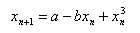
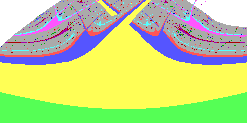
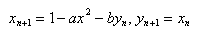
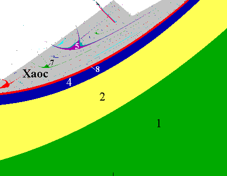

Динамические системы — это увлекательная область науки, занимающаяся изучением процессов изменения и эволюции различных объектов во времени.
От механических колебаний в физике до популяционных изменений в биологии, динамические системы представляют собой обширный спектр явлений, в которых каждая составляющая находится в постоянном взаимодействии с другими.
Эти системы описываются набором уравнений, отражающих их текущее состояние и законы, управляющие их поведением.
В нашем мире динамические системы встречаются повсюду: от простейших колебаний маятника до сложных климата Земли или экономических моделей.
Понимание этих систем позволяет не только предсказывать их будущее поведение, но и управлять ими, что имеет важное значение в различных областях — от инженерии до экологии.
Изучение динамических систем открывает перед нами новые горизонты: мы учимся видеть мир не как набор статичных объектов, а как сложную сеть взаимосвязей, где каждое действие может вызваться цепной реакцией.
Эта возможность заглянуть в саму суть изменения делает динамические системы ключевым предметом для изучения в современном мире.
Отображение Эно — это концепция, используемая в теории динамических систем, описывающая определенные типы нелинейных динамических процессов, которые характеризуются чувствительностью к начальным условиям и эффектом "разделения" траекторий.
Оно получило свое название в честь французского математика и физика Гастона Эно, который изучал такие системы в контексте хаоса и динамического поведения.
Кубические отображения часто используются для моделирования сложных систем в различных областях, таких как физика, биология, экономика и социальные науки.
Они помогают в понимании, как небольшие изменения в параметрах системы могут вести к значительным изменениям в ее поведении.
| Знакомство с различными системами | ||||
| Кубическое отображение  |  |
Дополнительная информация:
Исследование стабильности: Кубические функции могут демонстрировать как стабильные, так и нестабильные режимы поведения. Анализ стационарных точек (где производная функции равна нулю) позволяет определить, являются ли они притяжателями или отталкивателями. |
||
| Отображение Эно  |  |
Дополнительная информация:
Основной характеристикой отображения Эно является то, что даже минимальные изменения в начальных условиях могут привести к значительным различиям в поведении системы спустя некоторое время. Это свойство часто иллюстрируется на примере атмосферных процессоров или экономических моделей, где незначительные факторы могут повлиять на результирующие траектории развития. |
||